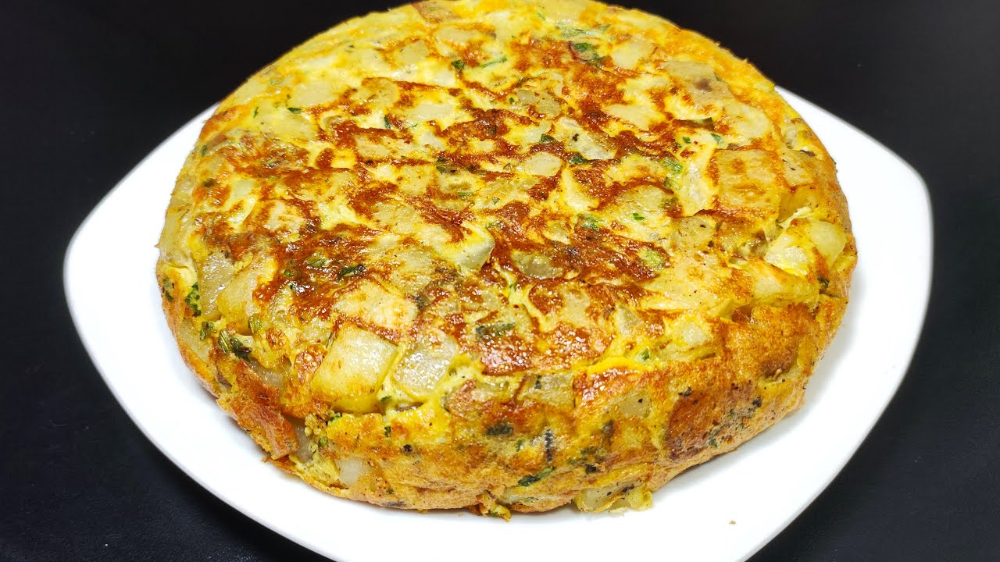

Tortilla de papa

La tortilla de papas, tortilla de papas o tortilla española es una tortilla u omelet
(es decir, huevo batido, cuajado con aceite en la sartén) a la que se le agrega patatas troceadas.
Se trata de uno de los platos más conocidos y emblemáticos de la cocina española, siendo un producto
muy popular que se puede encontrar en casi cualquier bar o restaurante del país.
Ingredientes
- 1kg de papa
- c/n aceite
- 8 huevos
- c/n sal y pimienta
Paso a paso
- Pelar las papas y cortarlas en rodajas finas cocinarlas sin dorar en abundante aceite
- Escurrir y mezclarlas con los huevos ligeramente batidos condimentar con sal y pimienta
- Colocar en una sartén de 26 cm aproximadamente bien caliente y ligeramente aceitada
- Mover el centro y cuando se note Que formó piso dar la vuelta con ayuda de un plato
- Volver a aceitar la sartén y cocinarla del otro la volver a repetir el procedimiento
dando vuelta la tortilla hasta que resulte bien formada y dorada retirar y servir
Volver al menú principal